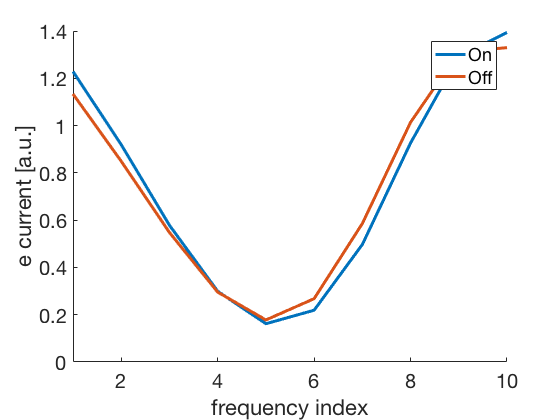
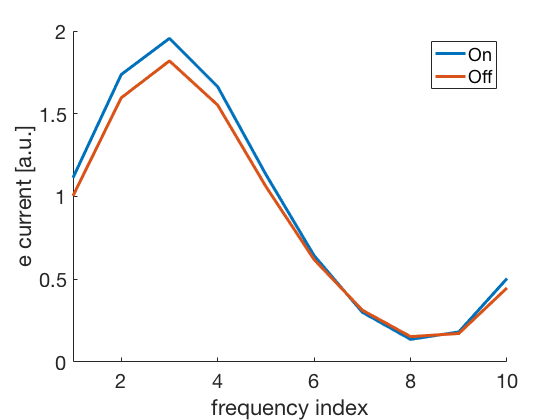
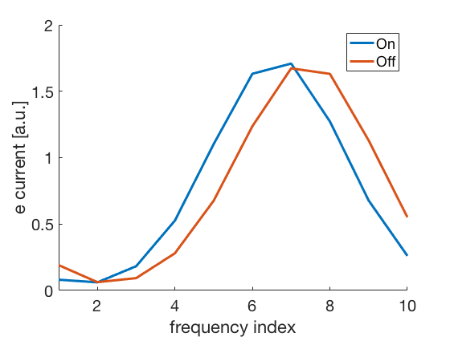

This is the readme for the model associated with the paper:
Sollini J, Chapuis GA, Clopath C, Chadderton P (2018) ON-OFF receptive
fields in auditory cortex diverge during development and contribute to
directional sweep selectivity. Nat Commun 9:2084
doi: http://dx.doi.org/10.1038/s41467-018-04548-3
This model was contributed by C Clopath.
Usage:
The below shows how to create output that is similar to supplemental figure 2B and is the basis for the whole paper.
To run the model type the name at the matlab prompt:
Sollini
After a short time you should see an image like these subsequent runs (includes random initialization each time):


